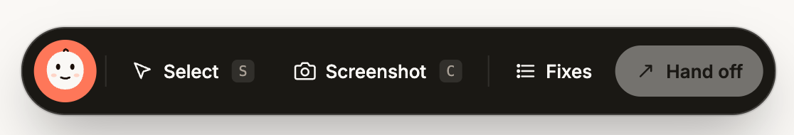

Pinch it, prompt it.
A floating overlay that lets you pick DOM elements on any page, write comments, and copy the whole batch as a single prompt for your AI agent — Claude, Cursor, Copilot, whatever you paste into.

Walk the page, point at what's broken, hand it off.
Built for vibe coders and developers who'd rather click the issue than describe it. Collect fixes as you go. Paste the batch when you're done.
Element picker
Hover to highlight, click to capture. Charlie records the selector, text, and surrounding component hints for your prompt.
Screenshot capture
Crop a region or grab the full viewport via html2canvas. Shots save alongside their note and survive reloads.
Shadow DOM isolated
The overlay lives in its own shadow root. Your page's CSS can't reach it, its CSS can't reach you.
One-prompt handoff
Every fix, every selector, every screenshot — bundled into a single markdown prompt ready to paste into Claude, Cursor, or Copilot.
Keyboard-first
S select, C capture, L list. Your hands stay on the keyboard.
~64 kB gzipped
Core overlay is ~12 kB. html2canvas only loads when you actually trigger a capture.
One line. Any project.
Drop it in via <script>, npm, React, or Vue. Gate on dev —
you almost certainly don't want Charlie loaded in production.
<script src="https://unpkg.com/charlie-fixes"></script>
Drops a toolbar at the bottom of every page the script loads on. Nothing else to configure.
npm install -D charlie-fixes // anywhere that runs on the client: import 'charlie-fixes';
Auto-mounts on import. Gate behind import.meta.env.DEV or process.env.NODE_ENV.
import { CharlieFixes } from 'charlie-fixes/react';
export default function RootLayout({ children }) {
return (
<html>
<body>
{children}
{process.env.NODE_ENV === 'development' &&& <CharlieFixes />}
</body>
</html>
);
}
Props: accent?: string, enabled?: boolean. Toggle enabled to mount/unmount at runtime.
import { createApp } from 'vue';
import App from './App.vue';
import { CharlieFixes } from 'charlie-fixes/vue';
createApp(App)
.component('CharlieFixes', CharlieFixes)
.mount('#app');
// template:
// <CharlieFixes v-if="isDev" accent="oklch(0.72 0.17 35)" />
For Nuxt, wrap in <ClientOnly> — the overlay is browser-only.
<script>
window.__CHARLIE__ = {
accent: 'oklch(0.72 0.17 35)', // any CSS color
mount: 'auto', // 'manual' to skip auto-mount
};
</script>
<script src="https://unpkg.com/charlie-fixes"></script>
<script>
// if mount: 'manual'
window.CharlieFixes.mount();
window.CharlieFixes.unmount();
</script>
This page is running Charlie fixes. Press S to pick an element, C to crop a screenshot, L to open the queue. Esc cancels.